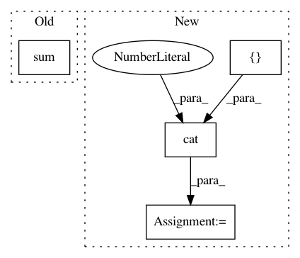

b420a5b5b3a617b82dcb1884741351c5641b9a86,examples/pytorch/line_graph/gnn.py,GNNModule,forward,#GNNModule#Any#Any#Any#Any#Any#Any#Any#,51
Before Change
x_list = [theta(z) for theta, z in zip(self.theta_list, self.aggregate(g, x))]
g.set_e_repr(y)
g.update_all(fn.copy_edge(), fn.sum())
yx = g.get_n_repr()
x = self.theta_x(x) + self.theta_deg(deg_g * x) + sum(x_list) + self.theta_y(yx)
After Change
x = self.theta_x(x) + self.theta_deg(deg_g * x) + sum_x + self.theta_y(pmpd_y)
n = self.out_feats // 2
x = th.cat([x[:, :n], F.relu(x[:, n:])], 1)
x = self.bn_x(x)
sum_y = sum(gamma(z) for gamma, z in zip(self.gamma_list, self.aggregate(lg, y)))
y = self.gamma_y(y) + self.gamma_deg(deg_lg * y) + sum_y + self.gamma_x(pmpd_x)
In pattern: SUPERPATTERN
Frequency: 3
Non-data size: 4
Instances
Project Name: dmlc/dgl
Commit Name: b420a5b5b3a617b82dcb1884741351c5641b9a86
Time: 2018-11-04
Author: yg1246@nyu.edu
File Name: examples/pytorch/line_graph/gnn.py
Class Name: GNNModule
Method Name: forward
Project Name: rusty1s/pytorch_geometric
Commit Name: a5b315ac8ed989b7219cac0c0b335a6b429cfc14
Time: 2018-03-09
Author: matthias.fey@tu-dortmund.de
File Name: torch_geometric/datasets/utils/planetoid.py
Class Name:
Method Name: read_planetoid
Project Name: allenai/allennlp
Commit Name: 5acb5a785b9ed60743e6f687a96bd92dd4e88578
Time: 2017-11-29
Author: markn@allenai.org
File Name: allennlp/modules/seq2vec_encoders/pytorch_seq2vec_wrapper.py
Class Name: PytorchSeq2VecWrapper
Method Name: forward